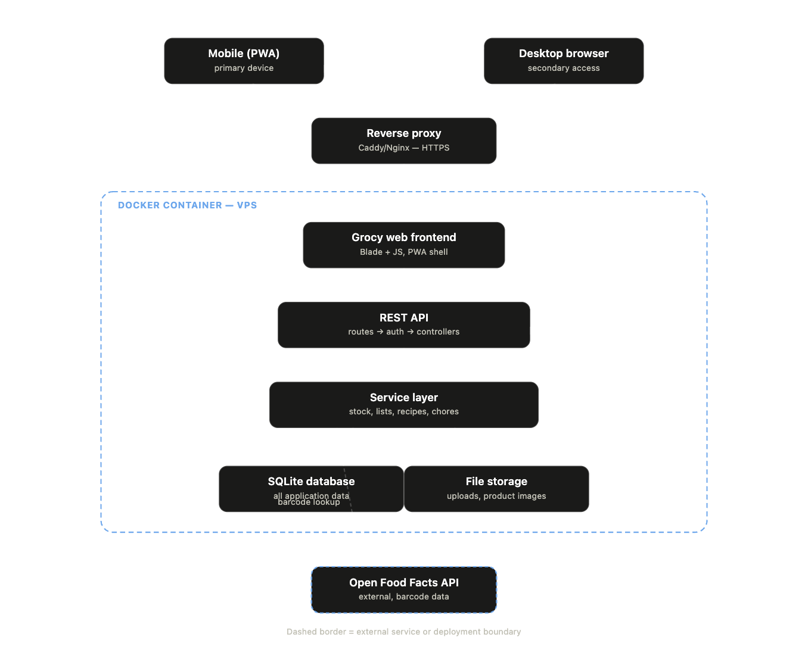
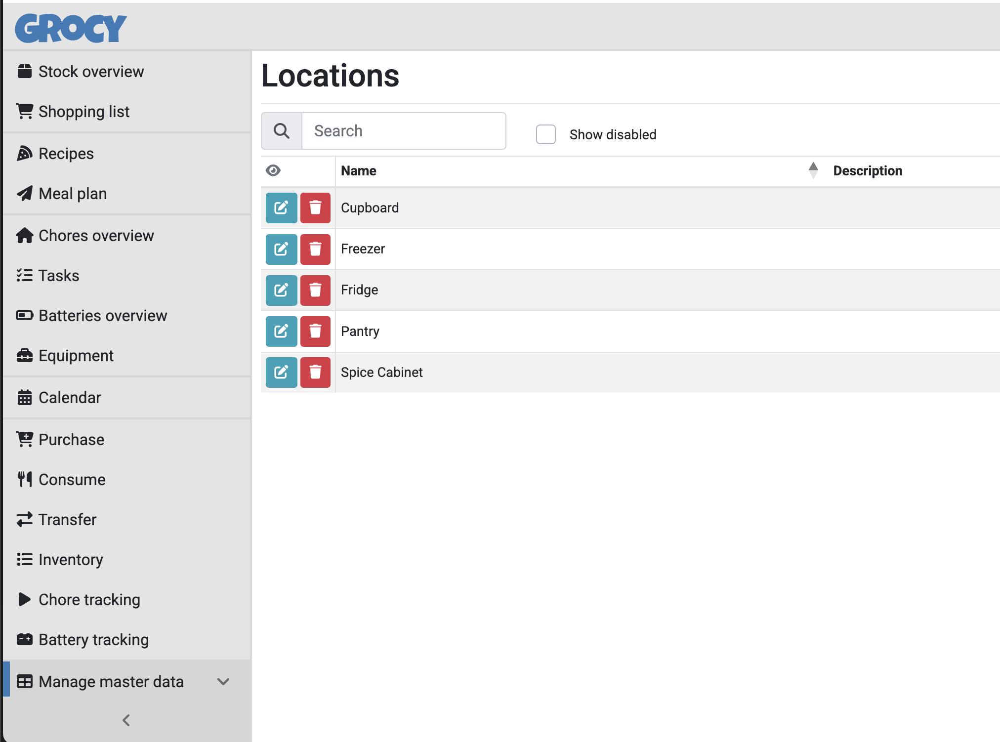
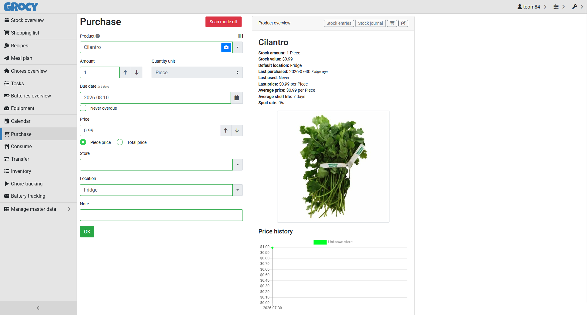
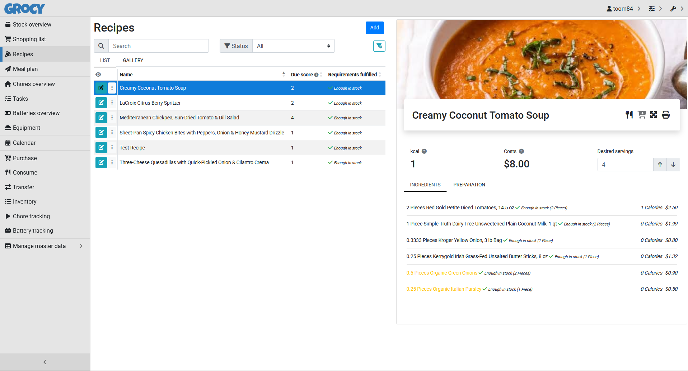
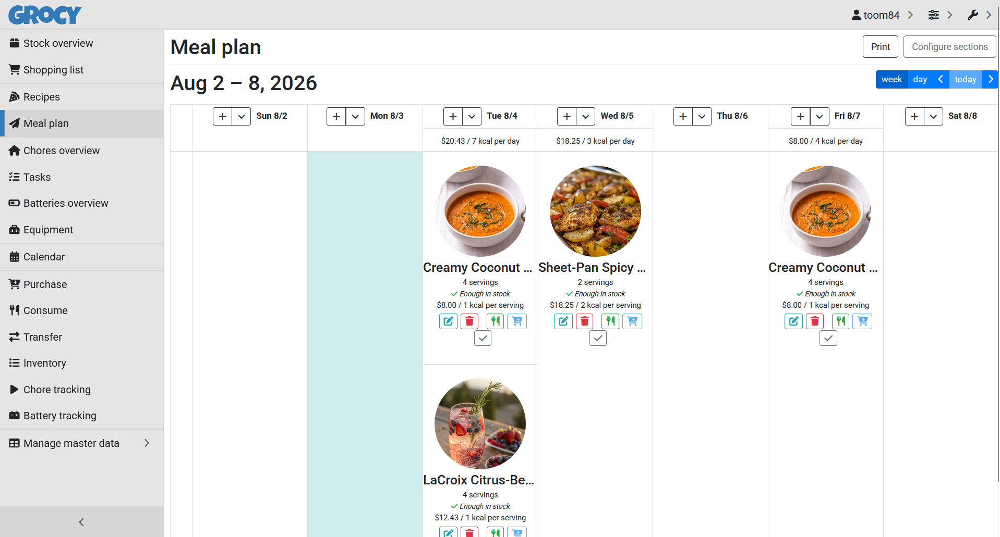

The problem
Enterprise ERP discovery usually leans on round after round of stakeholder interviews, workshops, and document reviews before the real dependencies show up: data quality issues, zone and location modeling, exception handling, permissions, mobility constraints. Too often those show up late, during testing or after launch, once they're expensive to fix.
I wanted to test whether that timeline could compress, not by skipping rigor, but by replacing talking about a system with actually building one. So I used a real, working household kitchen inventory tool, built on the open-source platform Grocy, as a lightweight stand-in for enterprise ERP discovery. If I actually built something instead of just discussing it, would I run into the same kinds of decisions that show up in large-scale ERP projects (item setup, inventory zones, barcode scanning, inventory rules, unit-of-measure configuration, mobility UX), and would I get there faster?
The household problem (not knowing what's in the pantry, wasting food, buying doubles) is really just the vehicle here. What I actually wanted to test was the discovery method itself. In a lot of ways, this project is a pilot for how Atom + Bits approaches discovery with clients, dressed up as a kitchen app.
What I did
I ran a structured discovery process, deliberately modeled on the same lens I use in Atom + Bits engagements: workflow, coordination, knowledge, decision-making, and readiness. Each assessment captured raw requirements and decisions before anything got synthesized into a formal PRD, the same way an enterprise discovery workstream logs interview notes before requirements get written up.

Technical spec generated on Day 1 of discovery.
Foundations & core workflows
Defined users, the primary problem (inventory visibility), config-only prototype scope, target platform, stock-in methods, and expiration tracking as a v1 must-have.
Rules & access
Set auto-add-at-threshold shopping behavior, scoped notifications to in-app only, chose hosting, and landed on an equal-permission dual-login model.
Scope discipline
Dropped receipt and photo OCR from v1, locked the final stock-in method set, and leveraged off-the-shelf API calls to ingest items from a national retailer.
What building revealed
This is where the real evidence lives. Every decision made building the Kitchen ERP has a direct match in enterprise ERP discovery, and building it forced each decision out in days, not workshop cycles.
The need for unlimited, custom zones (not a fixed template) was obvious on day one of physically stocking the kitchen. It's the kind of requirement that's easy to state in the abstract and easy to underscope in a workshop.
Real barcode coverage gaps (regional and generic products) showed up the moment items on hand were actually scanned, not from asking someone "will barcodes work for you?" in an interview.
It exposed the unhappy path right away: what happens when a scan comes back empty, a failure mode that often gets glossed over in a requirements doc until real testing happens.
It forced an actual number (a real threshold) instead of a vague ask like "let us know when we're running low."

Five custom zones — Cupboard, Freezer, Fridge, Pantry, Spice Cabinet — set up in place of the platform's three defaults.

The purchase flow, with the product overview panel — price history, average shelf life, and spoil rate tracked automatically.
The build
Self-hosted Grocy, an open-source inventory and ERP tool, on a budget cloud VPS, configured to fit the household rather than custom-built. Keeping v1 to configuration only was itself a strategic call: it kept the discovery test clean, so what was learned could be credited to the discovery process itself, not to how fast the app could be coded. I handled every part of it myself, start to finish: requirements, prioritization, and the PRD, plus deployment, infrastructure, and device testing on the live system.


Recipes pull live cost and stock data; the meal plan checks each recipe against what's actually on hand before it lands on the calendar — phase-2 features layered on once v1 discovery was locked.
The thing that actually slowed discovery down wasn't a technology gap, it was scope discipline.
Validation
Instead of a walkthrough or a mockup, the live production app was tested on an actual Android phone, across two mobile browsers, within the first two days it was live. It loaded and worked on both. Barcode scanning was tested the same way, on a handheld scanner within the two-week sprint, using the open-source tool Barcode Buddy.
Barcode scanning is the kind of dependency that often doesn't get tested until SIT or UAT, months into an enterprise rollout. Testing it inside the two-week sprint, instead of assuming a scanner and a lookup service would just work together, is the same discipline enterprise discovery teams often don't get to until much later.
Outcome
The long-term product metric (whether the system actually gets used day to day) needs more time before it can be reported honestly. What can be reported now is how fast discovery and decisions actually moved, using working software, not just pages of documentation and tech specs, and how far under budget it came in: the project was scoped at $500 and finished at $50, a 10x margin that translated directly into faster, lower-cost insights than planned.